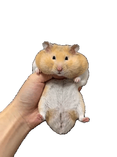

Layer 1 · paper bedding
What it is
Desk Pet turns any photo or video into a little pet that lives on
your desktop. You can drag it around, click it to hear it talk, and
leave it to wander along the edge of your screen while you work.
You can keep lots of pets, put several on the desktop at once, and
pack one into a single .deskpet file to share with a
friend.
I made Desk Pet as a gift for a friend. The hamster you see here — in the game at the top of this page — is her hamster, 大牛 (Da Niu), turned into a little digital version that lives on her desktop.
My best friend spends most of her day in the lab, far from Da Niu, so I wanted to give her a little stand-in she could keep close while she works. Hamsters don't live very long, either, and I wanted to capture as much of Da Niu as I could, so a small version of him gets to stay around for much longer. We both have ADHD, and we're both prone to wandering away from the computer and missing important emails and notifications. A pet sitting on the desktop is a gentle reason to keep glancing back at the screen. Hamsters are also nocturnal, so during the day the real Da Niu is usually asleep in a ball of bedding. This one is awake and moving around exactly when his owner is. And every time Da Niu wanders across her screen, I hope it reminds her that someone was thinking of her too.
Layer 2 · wood shavings
Four moods
Each pet can have a different look for resting, being clicked, being dragged, crawling and sleeping. These are Da Niu's.




Layer 3 · the tunnels
How it works
Open the control panel from the tray icon, then press “＋ New” or drop images and videos onto the window — each file becomes a new pet that appears in the corner of the screen straight away. On the right you can change its name, looks, size and the things it says, and every change saves itself and shows up on the desktop within a second.
If nobody touches a pet for a while it switches to its sleeping look and stops chatting; one click or drag wakes it up. With wandering turned on, it crawls to a random spot nearby — or always along the screen edges — and turns to face the way it's going.
You can also feed it: right-click a pet and choose “🌽 Feed it corn” (or feed every pet at once from the tray menu). The mouse pointer turns into a corn cob and the pet chases it at four times its crawling speed. When it catches the corn it eats it, plays its own “eating” look and says one of its “ate the corn” lines. Press Esc or right-click to put the corn down. (Try it on this site too — the 🌽 Feed button in the menu bar.)
It's built with Electron and plain HTML, CSS and JavaScript, with no front-end framework. I didn't write the code by hand: Claude Code wrote all of it, including the desktop app, the corn-cursor feeding and the browser version my friends can open from a link. My part was the idea, the hamster clips and GIFs, the reference photos, the rules for how Da Niu should behave, and testing it on my own desktop until it felt right.
My prompts changed a lot along the way. I started with one long written brief that set out everything up front: the files, the settings each pet has, how the windows should behave on Mac and Windows, and a checklist to test against. Once the pet was running, I switched to short requests in Chinese, one feature at a time, like “add a look for when it's being dragged” or “let it crawl around the screen by itself”. I also learned to describe the result exactly. When I asked for crawling that “always stops at the screen edge”, it first crawled along the edges, so I had to explain that it should roam anywhere and only stop at an edge. Later I showed instead of told, and sent photos of a real cage and a clear running wheel. By the end my prompts read like game rules: every five corns Da Niu runs on the wheel and burns off two, he can hold twenty at most, and below twenty, corn beats the wheel.
Layer 4 · the nest
The real one
At the very bottom of the burrow: 大牛 (Da Niu), my friend's hamster — who the whole gift is for.
← Back to my work